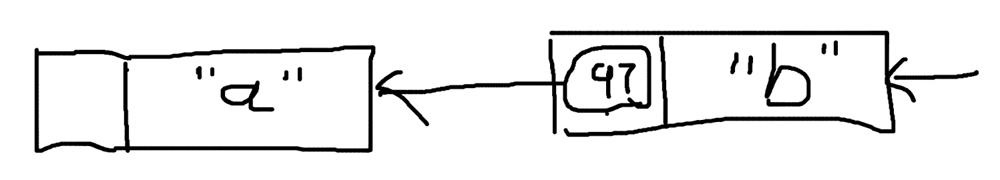

理解哈希函数与序列化
Hash function
Hash function 用于处理数据和其 hash values 的映射关系，hash values 是数据类似唯一标识的东西，可以用内存比较小的形式标识数据。hash function 有各种各样的实现，可以认为是一个黑盒子，进去的是 data，出来的是 hash values。

比如，我们可以把字符的 ASCII 码作为字符的 hash values：
HASH("a") = 97
HASH("b") = 98
HASH("c") = 99
HASH("d") = 100
对于 2 个字符的 data，就把两个字符的 ASCII 相加，作为 hash values：
HASH("ab") = 97 + 98 = 195
HASH("cd") = 99 + 100 = 199
但是这样很容易发现存在问题，HASH("ad") == HASH("bc") == 197。对于 3 个、4 个甚至更多字符的情形，hash values 重复的可能性更大。
hash values 是允许重复的，但如果存在大量重复，hash function 也就失去了它的作用和使用场景：如果全部都一样，无法区分，还用 hash values 干嘛？
不幸的是，目前最好的 hash function 也无法避免 hash values 重复的问题，只能尽可能减少 hash values 重复的概率，比如用类似数据库分库分表的方式，给每个字符足够的余量。
我们可以重新设计一下我们的 hash function，在只有 1 个字符的时候，仍然使用 ASCII 作为输出。在有 2 个字符的时候，让 第 1 个字符乘以一个基数，再加上第 2 个字符。由于第 1 个字符在乘以基数后会足够大，无论第 2 个字符是什么，在其基础上加上第 2 个字符的 ASCII 码，应该不会重复。
HASH("ab") = 97 * 1000 + 98 = 97098
HASH("cd") = 99 * 1000 + 100 = 99100
HASH("ad") = 97 * 1000 + 100 = 97100
HASH("cd") = 98 * 1000 + 99 = 98099
这样至少解决了 2 个字符 hash values 重复的问题。
推广到更一般的场景，在面对可能很多字符的情况下，基数使用质数以避免累加造成的重复，为了保证基数足够大，使用质数的不同次方分别作为每个字符的基数，公式为：
hashCodes = char1 * base^(l-1) + char2 * base^(l-2) + ...
hashCodes 是输出的 hash values，char1 是第 1 个字符，char2 是第 2个字符，base 是基数，l 指字符串的长度。对于 3 个字符长度的字符串，第 1 个字符的基数就是质数的 2 次方，第 2 个字符的基数是质数的 1 次方，第 3 个字符是 0 次方，以此类推。
如果质数选择为 31，hash function 的实现为：
public static int hashCode(byte[] value) {
int h = 0;
for(int i = 0; i < value.length; ++i) {
h = 31 * h + value[i];
}
return h;
}
也许具体的代码不是完全符合直觉，但你可以相信，和上面描述的公式是一致的。
hashCode("a") = 97
hashCode("ab") = 97 * 31 + 98 = 3105
hashCode("abc") = 97*31^2 + 98*31 + 99 = 96354
这就是 JDK (Java Development Kit) 中 hashCode 的实现方式。
Cryptographic hash function (CHF)
不难发现的是， hash function 比较容易根据 hash values 反推出原始的 data 是什么。我们可以写出这样的程序，假设我们已经知道字符长度是 2，由于字符使用 ASCII 编码，范围在 0 ~ 255，因此设 x 和 y 两个变量，枚举所有符合目标 hash values 的情况：
public static String deHashCode(int code) {
for (int x = 0; x <= 255; x++) {
int y = code - 31 * x;
if (y < 0 || y > 255) {
continue;
}
System.out.println(((char) x)+","+((char) y));
}
return "";
}
比如当 hashCode = 3105，得到的输出是：
\,ý
],Þ
^,¿
_,
`,
a,b
b,C
c,$
d,
原始数据 ab 就出现在了为数不多不多的可能性中。
那么有没有办法减少 hash values 推出原始 data 的方法？在 Public-key cryptography 中 % 可是起到了很大的作用。hash function 也可以与一些加密算法的原理结合。
cryptographic 是 hash function 的修饰词，即使用了加密算法的 hash function。

md5 是使用非常广泛也接近过时的一种 cryptographic hash function，可以把任意长度的 data 计算输出为 128 bit 的 hash values。
md5("a") = 0cc175b9c0f1b6a831c399e269772661
md5("ab") = 187ef4436122d1cc2f40dc2b92f0eba0
md5 的加密原理步骤很多，是一种不可逆的、单向的 hash function，无法轻易根据 hash values 得到 data。md5 的输入可以是任意大小的，1 GB 的二进制文件也可以hash 为 128 bit 的字符串。
md5 之外，SHA-1 的安全性更高，BLAKE2 的计算速度更快，它们都是典型的 cryptographic hash function。
Serialization
序列化是编程中很常见的一种操作，主要用于把复杂格式的数据转化成易于在不同环境中统一处理的格式，类似于定义一种接口格式，便于网络传输。

把数据转换为统一的过程称为 serialization，从统一格式转换为特殊格式的过程为 deserialization。JSON stringify 的过程也可以认为是一种序列化：
let object = {
field1: "abc",
field2: 123
}
let str = JSON.stringify(object)
print(str) // {"field1":"abc","field2":123}
Serialization + CHF
可以明确的是，JSON stringify 的结果是一个字符串，这个时候就可以和之前的 cryptographic hash function 结合起来用了：
md5(str) = d79152b724c5f1e52e6bd4bfaf6e1532
只要定义过数据的 serialization 方法，我们就可以得到任意数据格式的 hash values。
Serialization + CHF + Linked List
Linked list 之间的关联关系常用变量的引用地址表示，但指针不是惟一的方式，数据结构的含义也可以扩展到更大的范围。我们完全可以用节点数据的 hash values 作为关联：
98 是 b 的 hash values，表明值为 a 的节点，下一个节点的 hash values 为 98，也就是值为 b 的节点。
我们也可有使用反向的 linked-list：
a 的 hash values 是 97，表明值为 b 的节点，上一个节点的 hash values 为 97。
当然，这里的值可以是更复杂的数据结构，只要定义好 serialization 格式，也可以应用到更复杂的 hash function 上，比如这样正向的 linked-list：
type Node struct {
Value int
Next string
}
node1 = Node{ Value: "a" }
node1_str = JSON.stringify(node1) // { "Value": "a" }
node1_hash = md5(node1_str) // 9ad06e8a44d0daf821f110794fb012c7
node1.Next = node1_hash
这就构建好了一个节点，以此类推。
另一种也许更好或者更适用于某种特定场景的形式是，将其改为反向的 linked-list：
type Node struct {
Prev string
Value int
}
node1 = Node{ Value: "a" }
node1_str = JSON.stringify(node1) // { "Value": "a" }
node1_hash = md5(node1_str) // 9ad06e8a44d0daf821f110794fb012c7
node2 = Node{ Value: "b" }
node2_str = JSON.stringify(node2) // { "Value": "b" }
node2_hash = md5(node2_str) // 7e332b78dbaac93a818a6ab639f5a71b
node2.Prev = node1_hash
这种反向的 linked-list 就是区块链的基础数据结构。